WysiQ — Signals Module
User guide and training course
Measuring the dynamics, roughness and cycles of a series — 22 metrics explained with graphical examples
Reference version: build FIX35 · October 2026 · Language: English
Who is this course for? WysiQ users who can already load a table, plot series and use the Area palette. No background in signal processing is needed: each metric is introduced first by a visual example, then by its formula, then by how to interpret it. Estimated time: 3 hours (reading + exercises). Suggested path: chapters 1 to 4 (Basic level), then 5 (Advanced), then 6 (Expert) and the hands-on chapters 7 to 10. |
0. How to use this course
The Signals module adds a palette to WysiQ that computes, for every active series, a set of dynamics metrics: how much the curve moves, how fast, how regularly, and along which cycles. This document is at once a user manual (chapter 2), a reference (one card per metric, chapters 4 to 6) and training material (guided exercises, a case study and a quiz with answers).
Structure
| Chapter | Content | Level |
| 1 | Why Signals: what classic statistics do not see | All |
| 2 | Getting started with the Signal palette, step by step | All |
| 3 | Notation and calculation rules shared by all metrics | All |
| 4 | Basic metrics: nb, trans, TVAR, NTVAR, SIGN_CHG, PEAKS, VALLEYS, OSC_PERIOD | Basic |
| 5 | Advanced metrics: TVAR2, NTVAR2, SPIKE_RATIO, RAMP_CONC, ZERO_X, slopes, AUTOCORR_LAG1, SMOOTHNESS | Advanced |
| 6 | Expert metrics: HF_ENERGY and the four FFT scalars | Expert |
| 7 | Signal → Series: turning a metric into a curve | Advanced |
| 8 | Reading metrics together: diagnostic grid | Advanced |
| 9 | Case study: nuclear output with and without solar | All |
| 10 | Exercises and answers | All |
| 11 | Cheat sheet of the 22 metrics | All |
Conventions
• Metric names are written as in WysiQ, e.g. TVAR or FFT_PERIOD1.
• Interface labels are shown exactly as in the application: ReCalc, Use Area, Signals...
• The Basic, Advanced and Expert levels match the scale shown in Settings > Signal (Level column).
• Every number in the figures was computed with WysiQ's actual calculation engine (xiquery/signal/metrics.py): reproducing the examples gives the same values.
Boxes Blue: tip. Orange: pitfall. Green: key point. Purple: exercise. |
1. Why Signals?
The Area and Stats palettes answer the question “how much?”: mean (AVG), sum (SUM), difference between start and end (DELTA), range (RANGE). They say nothing about how the series evolves between two points. Two curves can have exactly the same mean and the same range and still tell completely different stories.
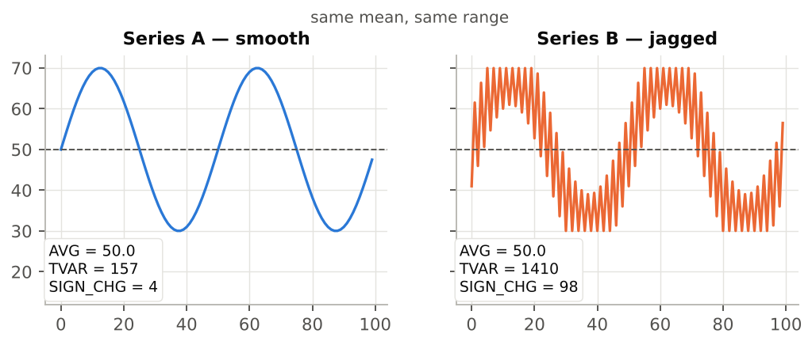
Figure 1 — Same mean (50) and same range (30 → 70), but very different dynamics.
In figure 1, AVG is 50 for both series. Yet series B travels a total of 1410 units against 157 for series A (TVAR), and changes direction 98 times instead of 4 (SIGN_CHG). This is exactly what the Signal palette measures: the internal movement of a series over an X range.
Questions Signals answers
| Business question | Metrics to look at |
| Is the series more agitated in this period than in that one? | NTVAR, SMOOTHNESS, HF_ENERGY |
| Are the movements regular, or made of a few big jumps? | SPIKE_RATIO, RAMP_CONC, ABS_SLOPE_MAX |
| How many times does the curve rise and fall back? | PEAKS, VALLEYS, SIGN_CHG |
| Is there a cycle, and how long is it? | FFT_PERIOD1, OSC_PERIOD, FFT_POWER_LF |
| Is the series predictable from one point to the next? | AUTOCORR_LAG1 |
| Does a balance change sign often? | ZERO_X |
Typical WysiQ example Compare the variability of nuclear output during periods with a lot of solar and without solar. The mean drops slightly, but above all the curve becomes “load-following”: daily modulations, ramps, midday dips. This full case is worked through in chapter 9. |
2. Getting started with the Signal palette
2.1 Opening the palette
1. Open a query and plot at least one series in the graph window.
2. Click the Signals button in the graph's button bar (next to Table, Area and Scenario). From the palette remote, the Si shortcut opens and closes the same palette.
3. The “Signal — <query name>” window opens. Its position, size and visibility are saved with the query and restored when it is reopened.
2.2 Which series are analysed?
The palette analyses every series ticked in column A of the Series palette: table series, Metrics, virtual series (alias, combo, committed scenario), and A series that are also plotted in G. Any coefficient (coeff) is applied: a series multiplied by 0.001 appears as Series*0.001.
No series? If the table header reads “Metric — no A-series active (check A column)”, no series is ticked in A. Tick column A for the series to analyse, then click ReCalc. |
2.3 Choosing the X range
Metrics are computed only over the points whose X lies between Xmin and Xmax. Two modes:
| Mode | Behaviour |
| Use Area ticked (default) | If a valid Area rectangle exists on the graph, Xmin/Xmax are taken from it. Without a valid rectangle, Signal shows the visible X bounds and analyses all points. |
| Use Area unticked (manual) | Xmin and Xmax become editable. Type the bounds and confirm with Enter (or by leaving the field): the calculation is re-run. |
• Dates in Xmin/Xmax follow the format set in Params > Core > Date format (tables).
• X can be time, a raw series, a Metric or a computed series: the palette follows the graph's X axis.
• The fields do not recalculate on every keystroke: only Enter, leaving the field, or ReCalc trigger the calculation.
2.4 The eps threshold
The eps field sets an amplitude below which a change is treated as noise. It affects the counting metrics: SIGN_CHG, PEAKS, VALLEYS, OSC_PERIOD (through the extrema) and ZERO_X. It does not change TVAR, NTVAR, the slopes or the FFT. Default: 0 (no filtering). How to use it is explained in the SIGN_CHG card (§ 4.5).
2.5 Anatomy of the palette
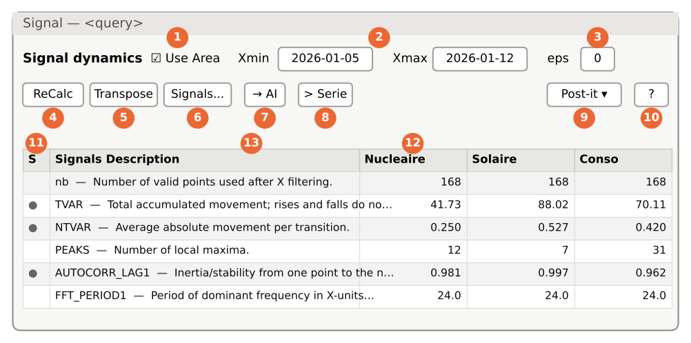
Figure 2 — Diagram of the Signal palette (normal view: one row per metric, one column per series).
| No. | Element | Purpose |
| 1 | Use Area | Syncs Xmin/Xmax with the Area rectangle (§ 2.3). |
| 2 | Xmin / Xmax | Bounds of the analysed range; editable when Use Area is unticked. |
| 3 | eps | Noise threshold for the counting metrics (§ 2.4). |
| 4 | ReCalc | Recomputes all metrics and re-reads the X bounds. |
| 5 | Transpose | Toggles between normal view (metrics as rows) and transposed view (series as rows, metrics as columns). |
| 6 | Signals... | Opens the Settings > Signal tab directly (column choice, HF window). |
| 7 | → AI | Sends the computed table to the AI Feed (§ 2.8). |
| 8 | > Serie | Turns on send mode to build vector series (chapter 7). |
| 9 | Post-it ▾ | Post-it: frozen yellow copy of the table. Hide/Show: hides or shows the post-its. |
| 10 | ? | Opens the palette's built-in help. |
| 11 | S column | ● = the metric has a vector version; green ✓ = already sent during this session. |
| 12 | Series headers | A click sorts the table; in > Serie mode, a click selects the series. |
| 13 | Signals Description | Metric name followed by its short description. |
2.6 Choosing the displayed metrics: Settings > Signal
The Signals... button opens the Signal tab of the Settings window. It lists the catalogue of 22 metrics in five columns: Show (✓ if displayed), Signal (name), Level (Basic, Advanced, Expert), Formula and Meaning.
• Click a row to show or hide the corresponding column in the palette.
• Click the Signal (n/22) all on/off header to show or hide everything.
• The HF moving average window field sets the moving-average window used by HF_ENERGY and by every rolling Signal → Series conversion. Default: 7. Even values are rounded down to the next odd value (8 → 7) to keep the window centred. Accepted range: 3 to 999.
Training tip Start by showing only the Basic metrics. Add the Advanced and then Expert levels as you go through the chapters: the table stays readable and each new column means something. |
2.7 Reading, sorting, transposing and copying
• Sort: click the header of a series (normal view) or of a metric (transposed view).
• Transpose: the transposed view is handier with many series and few metrics.
• Copy: select rows then CTRL+C; column headers are copied with the values (paste straight into a spreadsheet).
• Freeze: Post-it creates a yellow copy of the table. Change the X range, recalculate, and compare the old and new tables side by side.
• The number of decimals follows the WysiQ decimals setting; column widths are remembered.
2.8 Sending results to the AI: → AI
After a calculation, → AI places the signals table in the query's AI Feed. In the AI Center, the built-in question Interpret Signals asks the assistant to identify the strongest signals, explain peaks, breaks, cycles or anomalies, separate data artefacts from meaningful events, and suggest the next checks. If nothing has been computed yet, a message asks you to run ReCalc first.
2.9 Guided exercise 1 — a first measurement
Goal: compare two weeks of the same series • Plot an hourly series (for example a consumption) and tick it in A. • Open the Signals palette. Leave Use Area ticked. • In the Area palette, draw a rectangle over a first week. Click ReCalc. • Choose Post-it to freeze the result. • Move the rectangle to a second week, then ReCalc. • Compare NTVAR and PEAKS between the post-it and the current table. Which week is more agitated? |
3. Notation and calculation rules
All metrics share the same data preparation. Knowing it prevents most interpretation mistakes.
3.1 Valid points and transitions
Only points where both X and Y are finite numbers are kept; missing values (NaN) are removed before any calculation. The remaining points are written y0, y1, …, yn, and successive differences dy[i] = y[i+1] − y[i].
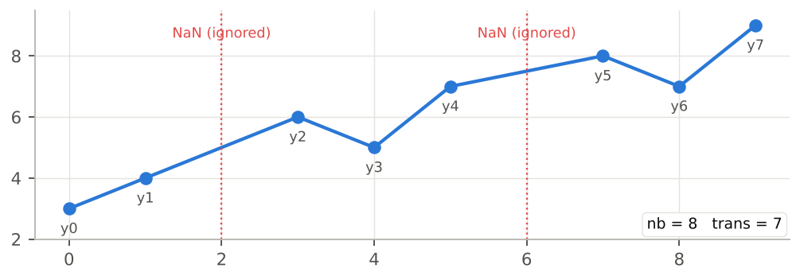
Figure 3 — Two missing values are ignored: nb = 8 valid points, trans = 7 transitions.
Gaps are “stitched” When a NaN is removed, the previous and next points become consecutive: the transition jumps across the gap. With long outages this creates an artificial jump that inflates TVAR2, SPIKE_RATIO or ABS_SLOPE_MAX. Pick an X range without large gaps, or fill them beforehand. |
3.2 The unit of X: watch out for dates
When the X axis is a date, WysiQ converts it to a number of days (Matplotlib convention). Every X-dependent metric is then expressed in days:
| Metric | Unit when X is a date | Example |
| ABS_SLOPE_AVG, ABS_SLOPE_MAX | Y unit per day | MW/day |
| OSC_PERIOD, FFT_PERIOD1 | days | 1.0 = 24 h; 0.25 = 6 h; 7.0 = one week |
| FFT_FREQ1 | cycles per day | 1.0 = one cycle per day |
In this course's examples, X is often given in hours or as an index to keep the numbers simple: divide by 24 to get the value WysiQ shows on an hourly date axis.
3.3 Metrics with and without units
Some metrics inherit Y's unit (TVAR, NTVAR, slopes…): they can only be compared between series of the same unit and scale. Others are dimensionless (SPIKE_RATIO, RAMP_CONC, AUTOCORR_LAG1, FFT_POWER_HF/LF) or are counts (PEAKS, SIGN_CHG…): they can be compared between any series. The cheat sheet in chapter 11 flags this for each metric.
3.4 nan values
A “nan” cell means the metric is undefined for the selected range: fewer than 2 points (no transition), fewer than 3 points (autocorrelation), fewer than 5 points (HF_ENERGY), fewer than 8 points (FFT), a constant series (autocorrelation), or fewer than two extrema (OSC_PERIOD). It is not an error: widen the X range.
4. Basic-level metrics
Each of the eight Basic metrics rests on a single mechanical idea and can be read at a glance. They are enough for most everyday comparisons.
4.1 nb — number of valid points
| Level | Formula | Unit | Signal → Series |
| Basic | nb = len(y) | points | no |
Number of points actually used after removing missing values and filtering on [Xmin, Xmax]. It is the first column to check: it confirms the range is right and reveals an incomplete series (nb smaller than for the other series on the same range).
• A full hourly week gives nb = 168; a day at quarter-hour resolution gives nb = 96.
• If nb differs between two series on the same range, one has gaps: sum-based metrics (TVAR, TVAR2, HF_ENERGY) are then not directly comparable.
4.2 trans — number of transitions
| Level | Formula | Unit | Signal → Series |
| Basic | trans = len(dy) = nb − 1 | transitions | no |
Number of steps between consecutive points. It is the denominator of the normalised versions NTVAR and NTVAR2. If it is 0 (a single point), all movement metrics are nan.
4.3 TVAR — total variation
| Level | Formula | Unit | Signal → Series |
| Basic | TVAR = Σ |dy[i]| | Y unit | yes: Local variance |
TVAR adds up the absolute value of every movement: rises and falls do not cancel out. It is the “vertical distance travelled” by the curve, like the odometer of a car driving back and forth.
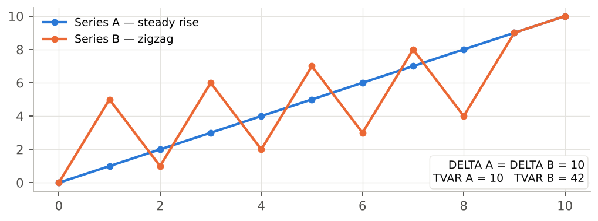
Figure 4 — Same DELTA (0 → 10) but TVAR = 10 for the steady rise and 42 for the zigzag.
Reading TVAR
• TVAR = |DELTA|: the series moved monotonically (always in the same direction).
• TVAR ≫ |DELTA|: the series went back and forth a lot. The ratio TVAR / |DELTA| measures this “extra path”.
• TVAR depends on the number of points: to compare ranges of different lengths, use NTVAR.
WysiQ usage On dispatchable generation, TVAR over one day approximates the cumulative modulation volume (in MW) performed by the fleet. |
4.4 NTVAR — normalised TVAR
| Level | Formula | Unit | Signal → Series |
| Basic | NTVAR = TVAR / trans | Y unit per step | yes: Local variance |
Average absolute movement per transition. NTVAR lets you compare ranges of different lengths, provided the sampling step is the same.
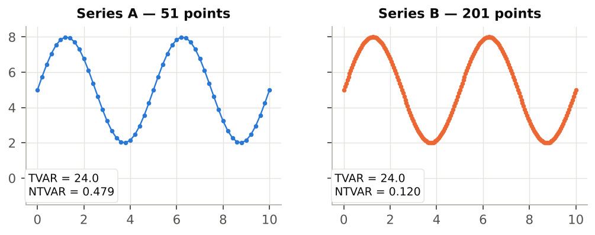
Figure 5 — The same curve sampled with 51 then 201 points: TVAR stays ≈ 24, but NTVAR drops from 0.479 to 0.120.
Pitfall: the sampling step On a smooth curve, the more points there are, the smaller each step: NTVAR drops mechanically. Only compare NTVAR between series with the same step (hourly vs hourly). For a step-independent indicator, use ABS_SLOPE_AVG (§ 5.6), which divides by dx. |
4.5 SIGN_CHG — direction changes
| Level | Formula | Unit | Signal → Series |
| Basic | SIGN_CHG = count(sign(dy[i]) ≠ sign(dy[i−1])) after eps filtering |
count | no |
Counts how many times the slope changes sign, i.e. how many times the curve switches from “rising” to “falling” or back. Zero steps are ignored, and so are steps whose amplitude is below eps.
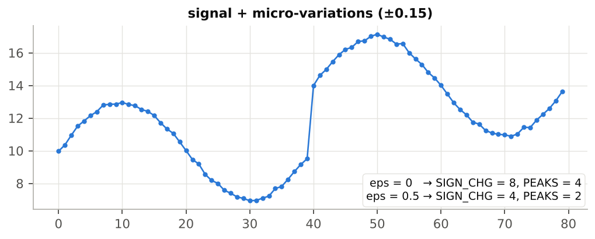
Figure 6 — ±0.15 noise adds spurious direction changes; eps = 0.5 removes them (SIGN_CHG: 8 → 4).
Choosing eps
1. Zoom into a “calm” part of the series and estimate the typical point-to-point noise amplitude.
2. Enter 2 to 3 times that amplitude in eps, then press Enter.
3. Check that SIGN_CHG, PEAKS and VALLEYS now match the oscillations visible by eye.
Key point eps is expressed in Y's unit: a value suited to a series in MW does not suit a series in GW. Without eps, the counts mostly measure noise. |
4.6 PEAKS and VALLEYS — local peaks and dips
| Level | Formula | Unit | Signal → Series |
| Basic | PEAKS: slope + then − VALLEYS: slope − then + |
count | no |
PEAKS counts local maxima (the curve rises then falls), VALLEYS local minima. Plateaus (zero slope or below eps) are “crossed”: a plateau between a rise and a fall counts as a single peak.
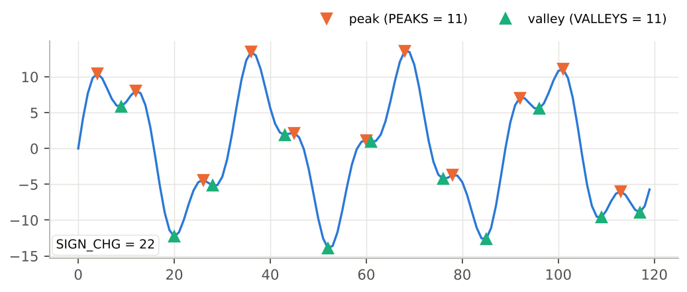
Figure 7 — A two-component signal: PEAKS = 11, VALLEYS = 11, SIGN_CHG = 22.
• Without eps, SIGN_CHG ≈ PEAKS + VALLEYS almost always holds.
• |PEAKS − VALLEYS| ≤ 1: peaks and dips necessarily alternate.
• On a consumption day, PEAKS = 2 reflects the classic morning/evening double peak.
4.7 OSC_PERIOD — average spacing between extrema
| Level | Formula | Unit | Signal → Series |
| Basic | OSC_PERIOD = mean X distance between successive extrema |
X unit | no |
OSC_PERIOD finds every peak and dip (with the same eps filtering), then computes the average X distance between two consecutive extrema.
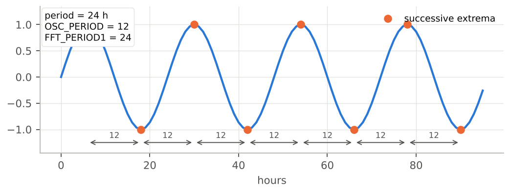
Figure 8 — Sine wave with a 24 h period: OSC_PERIOD = 12, FFT_PERIOD1 = 24.
Half-period The distance measured runs from a peak to the next dip: for a regular oscillation, OSC_PERIOD is therefore half the cycle period. Multiply by 2 to compare it with FFT_PERIOD1. If 2 × OSC_PERIOD ≈ FFT_PERIOD1, the detected cycle is clean; if OSC_PERIOD is much smaller, micro-oscillations (noise) are adding in: increase eps. |
OSC_PERIOD is nan if there are fewer than two extrema in the range (monotonic series).
5. Advanced-level metrics
Advanced metrics require keeping several ideas in mind at once: quadratic energy, concentration of movement, slope, inertia. They separate series that the Basic metrics consider alike.
5.1 TVAR2 — dynamic energy
| Level | Formula | Unit | Signal → Series |
| Advanced | TVAR2 = Σ dy[i]² | Y unit squared | yes: Local variance |
TVAR2 squares each movement before summing: one big jump weighs far more than several small steps with the same total. This is the metric that separates spread-out movement from concentrated movement.
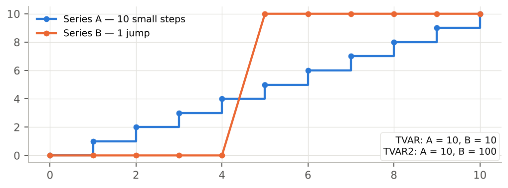
Figure 9 — Same TVAR (10) but TVAR2 = 10 for 10 steps of 1 and 100 for one jump of 10.
• TVAR2 reacts strongly to ramps and spikes.
• Its unit is the square of Y's: the raw value says little; use it mainly for comparison, or through SPIKE_RATIO and RAMP_CONC.
5.2 NTVAR2 — average energy per transition
| Level | Formula | Unit | Signal → Series |
| Advanced | NTVAR2 = TVAR2 / trans | Y unit squared | yes: Local variance |
Normalised version of TVAR2, comparable between ranges of different lengths (at the same step). Its square root, √NTVAR2, is the root-mean-square step amplitude, in Y's unit.
5.3 SPIKE_RATIO — dominance of spikes
| Level | Formula | Unit | Signal → Series |
| Advanced | SPIKE_RATIO = NTVAR2 / NTVAR² | dimensionless, ≥ 1 | no |
SPIKE_RATIO compares the mean quadratic energy with the square of the mean movement. It equals 1 when all steps have the same size and grows when a few large movements dominate. Being dimensionless, it can be compared across series of any scale (MW, °C, €…).
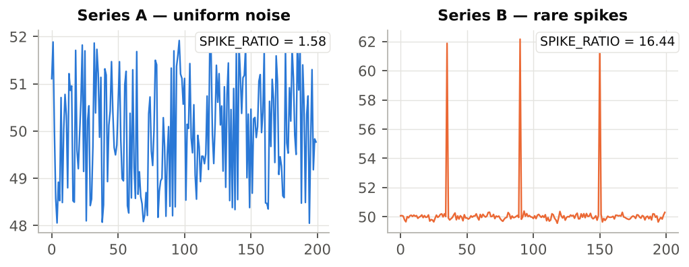
Figure 10 — Uniform noise: SPIKE_RATIO = 1.58; three isolated spikes on a calm background: 16.44.
| SPIKE_RATIO | Reading |
| ≈ 1 | Movements of uniform size (regular steps, pure alternation). |
| 1.2 – 2 | Ordinary noise or gentle oscillation: some steps larger than others. |
| 2 – 5 | Ramps or marked events amid moderate movement. |
| > 5 | A few rare jumps or spikes carry most of the movement. |
WysiQ usage A high SPIKE_RATIO on spot prices flags price-spike episodes; on a sensor it often flags outliers worth checking. |
5.4 RAMP_CONC — ramp concentration
| Level | Formula | Unit | Signal → Series |
| Advanced | RAMP_CONC = √TVAR2 / TVAR | dimensionless, between 1/√trans and 1 | no |
RAMP_CONC measures the share of total movement carried by a few large moves. It equals 1 when a single step carries all the movement and falls towards 1/√trans when all steps are equal (fully diffuse movement).
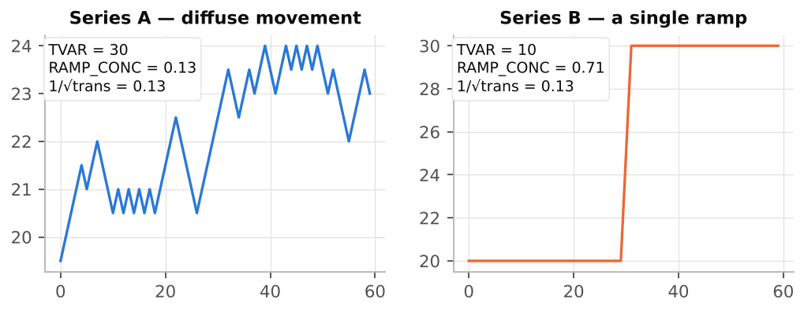
Figure 11 — Small regular steps: RAMP_CONC = 0.13 (= 1/√trans); a single ramp: 0.71.
Compare with the lower bound The lower bound 1/√trans depends on the number of points (0.08 for 168 points, 0.33 for 10 points). To compare ranges of different lengths, look at SPIKE_RATIO instead, or compare RAMP_CONC × √trans. SPIKE_RATIO and RAMP_CONC complement each other: the first asks “do spikes dominate?”, the second “how many events carry the movement?”. |
5.5 ZERO_X — zero crossings
| Level | Formula | Unit | Signal → Series |
| Advanced | ZERO_X = count(sign(y[i]) ≠ sign(y[i−1])) | count | no |
Counts how many times the value (not the slope) changes sign. Values with |y| < eps are treated as zero and ignored. ZERO_X only makes sense for a series that oscillates around 0: import/export balance, forecast error, negative prices, the derivative of another series.
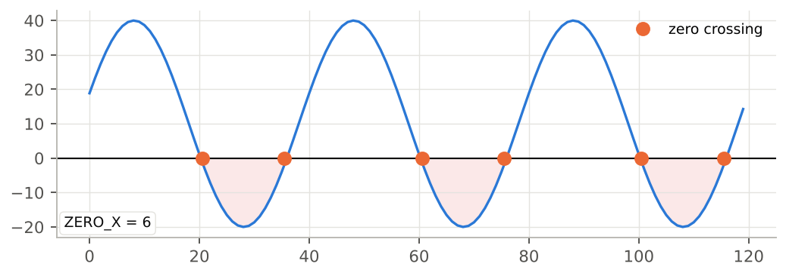
Figure 12 — ZERO_X = 6: the series switches between positive and negative six times.
Tip To count crossings around the mean rather than 0, create a centred Metric (series − AVG) and analyse it. |
5.6 ABS_SLOPE_AVG and ABS_SLOPE_MAX — absolute slopes
| Level | Formula | Unit | Signal → Series |
| Advanced | ABS_SLOPE_AVG = mean(|dy/dx|) ABS_SLOPE_MAX = max(|dy/dx|) |
Y unit per X unit | yes: Derivative, Acceleration |
The local slope |dy/dx| divides each movement by the matching X gap. ABS_SLOPE_AVG gives the average rate of change, ABS_SLOPE_MAX the steepest ramp in the range. Unlike NTVAR, the slope does not depend on the sampling step and stays correct when the X step is irregular.
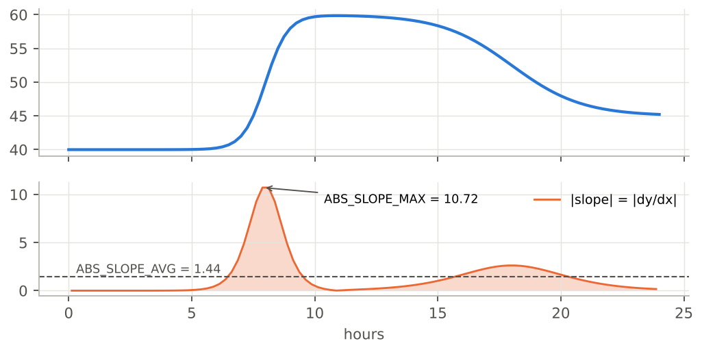
Figure 13 — Top: the series; bottom: its absolute slope — mean 1.44, maximum 10.72 (Y per hour).
• If X is a date, the slope is in Y units per day: a 1,000 MW ramp in one hour shows as 24,000 MW/day.
• If X is regular with a step of 1, ABS_SLOPE_AVG = NTVAR (compare the two columns to check the step is regular).
• ABS_SLOPE_MAX is very sensitive to a single outlier: cross-check with SPIKE_RATIO.
5.7 AUTOCORR_LAG1 — point-to-point inertia
| Level | Formula | Unit | Signal → Series |
| Advanced | AUTOCORR_LAG1 = corr(y[:-1], y[1:]) | dimensionless, −1 to +1 | yes: Rolling correlation |
Correlation between the series and itself shifted by one point. It answers the question: “does knowing the current value help predict the next one?”
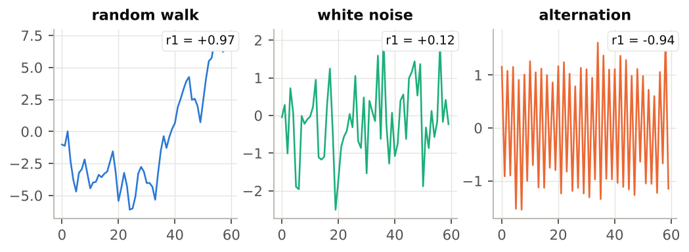
Figure 14 — Random walk r1 = 0.97, white noise r1 = 0.12, alternation r1 = -0.94.
| Value | Reading |
| close to +1 | Persistent, inertial signal: each point resembles the previous one (temperatures, smoothed consumption, levels). |
| close to 0 | White noise: the next point cannot be predicted from the current one. |
| negative | Alternation: a rise is followed by a fall (oscillation at the sampling step, systematic correction). |
Trend and inertia A strong trend (a ramp) also gives an autocorrelation close to 1, even if the signal is very noisy around the trend. To isolate the noise, analyse a detrended series or look at HF_ENERGY and FFT_POWER_HF. On a constant series, the autocorrelation is undefined (nan). |
5.8 SMOOTHNESS — regularity score
| Level | Formula | Unit | Signal → Series |
| Advanced | SMOOTHNESS = 1 / (1 + NTVAR) | dimensionless, between 0 and 1 | yes: Local fractality |
Inverse roughness score: 1 for a perfectly flat series, close to 0 for a very agitated one. Handy for quickly ranking series of the same unit from smoothest to roughest.
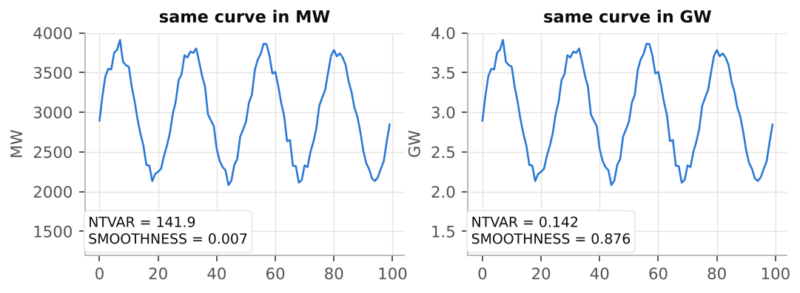
Figure 15 — The same curve in MW (SMOOTHNESS = 0.007) and in GW (0.876).
SMOOTHNESS depends on the unit Although bounded between 0 and 1, SMOOTHNESS is computed from NTVAR, which carries Y's unit. Converting MW to GW changes the score completely. Only compare SMOOTHNESS between series of the same unit and scale; for cross-unit ranking, use AUTOCORR_LAG1 or FFT_POWER_HF. |
6. Expert-level metrics
Expert metrics are for users who want to understand what lies behind the maths. They rely on two tools: moving-average smoothing (HF_ENERGY) and the fast Fourier transform (the four FFT metrics).
6.1 HF_ENERGY — high-frequency energy
| Level | Formula | Unit | Signal → Series |
| Expert | smooth = moving average(y, w) HF_ENERGY = Σ (y − smooth)² |
Y unit squared | yes: Local energy |
The series is smoothed with a centred moving average over w points (the HF moving average window parameter, default 7), then the squared differences between the series and its smoothed version are summed. What remains after smoothing is the fast movement: noise, short oscillations, short-term control.
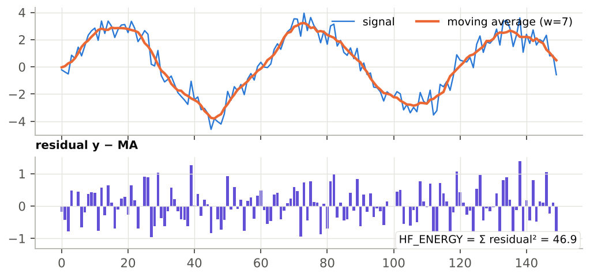
Figure 16 — Top: the signal and its moving average; bottom: the residuals, whose sum of squares is 46.9. Same signal with less noise: 3.6.
Choosing the window w
• w must be shorter than the variations you consider “signal”: anything varying faster than w points counts as high frequency.
• Hourly data: w = 5 to 7 isolates fast intraday variations; w = 25 would also push the daily cycle into the HF.
• Use odd values: an even value is brought down to the next odd value.
Compare at equal scale HF_ENERGY is a sum: it depends on the number of points and on Y's unit. Compare ranges of the same length and series of the same unit. Version note (FIX35): at the edges of the range, smoothing pads with zeros. On a series whose level is far from 0 (for example 40,000 MW), the first and last points produce huge residuals that dominate the sum. Until this is fixed, analyse a centred series (Metric series − AVG) or use the Local energy conversion (chapter 7), which does not have this issue. |
6.2 The FFT on one page
The Fourier transform breaks a series down into a sum of sine waves of different frequencies. The result, the spectrum, shows how much energy each frequency carries. Reading a raw spectrum takes specialist training, so WysiQ extracts four directly useful numbers instead.
• Resampling: the series is first linearly interpolated onto a regular X grid with the same number of points, so the metrics also work with an irregular step (missing dates, gaps).
• At least 8 valid points, otherwise all four metrics are nan.
• DC component excluded: the series mean (frequency 0) is never picked as the dominant frequency.
• Resolution: over a range of duration L, the FFT can only detect the periods L, L/2, L/3, L/4… Over one week (168 h), the possible periods are 168, 84, 56, 42, 33.6, 28, 24 h… Pick a range containing a whole number of the expected cycles, and at least 3 to 4 of them.
6.3 FFT_FREQ1 and FFT_PERIOD1 — dominant cycle
| Level | Formula | Unit | Signal → Series |
| Expert | FFT_FREQ1 = frequency of the |FFT|² peak (DC component excluded) FFT_PERIOD1 = 1 / FFT_FREQ1 |
cycles per X unit; X unit |
no |
FFT_FREQ1 is the frequency carrying the most energy; FFT_PERIOD1 is the matching duration, in X units. It is the direct answer to “does this series have a cycle, and which one?”.
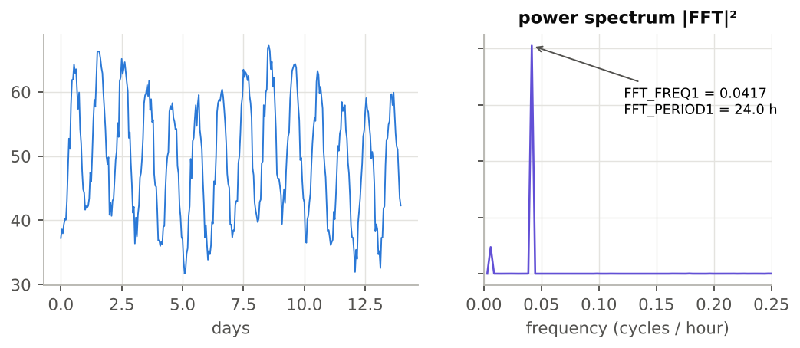
Figure 17 — Two weeks of hourly data: the spectrum shows a clear peak at 0.0417 cycles/hour, i.e. FFT_PERIOD1 = 24.0 h.
• With a date axis, a daily cycle shows as FFT_PERIOD1 ≈ 1.0 (day), a weekly cycle as ≈ 7.0.
• Cross-check: 2 × OSC_PERIOD ≈ FFT_PERIOD1 confirms the cycle is actually visible in the curve.
• FFT_PERIOD1 equal to the full length of the range usually means “no cycle, only a trend”.
The FFT always answers Even on pure noise, FFT_PERIOD1 returns a value (on the white noise of figure 14: 75). Before trusting a cycle, check that FFT_POWER_LF is high and AUTOCORR_LAG1 is clearly positive. |
6.4 FFT_POWER_HF and FFT_POWER_LF — energy split
| Level | Formula | Unit | Signal → Series |
| Expert | FFT_POWER_HF = Σ|FFT[f > f_median]|² / Σ|FFT[f > 0]|² FFT_POWER_LF = 1 − FFT_POWER_HF |
dimensionless, between 0 and 1 | no |
The spectrum (excluding zero frequency) is split into two halves of equal width. FFT_POWER_HF is the energy share of the upper half, FFT_POWER_LF that of the lower half; they always add up to 1.
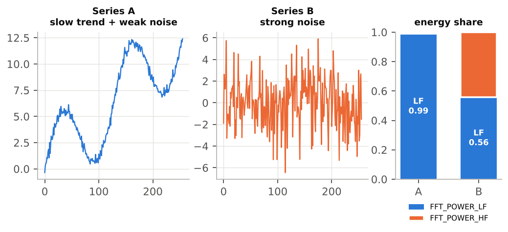
Figure 18 — Slow trend: FFT_POWER_HF = 0.01; strong noise: 0.44.
• The cut-off sits at a quarter of the sampling frequency, i.e. periods of about 4 steps. “HF” therefore means movement on the scale of a few points: with hourly data, a daily cycle counts entirely as LF.
• FFT_POWER_HF close to 0.5: signature of white noise (energy spread evenly).
• FFT_POWER_HF close to 1: fast point-to-point alternation (see the “alternation” in figure 14: 0.98).
• FFT_POWER_LF close to 1: slow trend or long cycles dominate. Being dimensionless, this ratio can be compared across all series.
7. Signal → Series: turning a metric into a curve
The table's metrics are scalars: one number per series and per range. The Signals module also provides their vector versions: a rolling calculation that returns one value per X point. The result is a new series, the same length as its source, plotted like any other: you can use it in Metrics, a PCA, Areas, or send it to the AI.
7.1 The seven conversions
| Conversion (menu) | Calculation | Window | Offered from |
| Rolling mean | centred rolling mean | w | every convertible metric |
| Local variance | centred rolling variance | w | TVAR, TVAR2, NTVAR, NTVAR2 |
| Local energy | rolling sum of squared residuals after short smoothing | w | HF_ENERGY |
| Derivative | dy/dx (gradient) | none | all; ABS_SLOPE_AVG/MAX |
| Acceleration | second derivative d²y/dx² | none | ABS_SLOPE_AVG/MAX |
| Rolling correlation | rolling correlation with a 2nd series | w | AUTOCORR_LAG1 |
| Local fractality | path length / start-to-end gap within the window | w | SMOOTHNESS |
The window w is the HF moving average window field (Settings > Signal): no extra parameter to enter. Edges where the window is incomplete are computed on the available points; positions that cannot be computed are NaN, so the series stays aligned point by point with its source.
7.2 Quick method: right-click a cell
1. Compute the metrics (ReCalc).
2. Right-click a cell in the table. In normal view, the target series is the one in the clicked column; in transposed view, the one in the row. (On macOS: Ctrl + click.)
3. Pick the conversion from the “<series> → Series” menu. For Rolling correlation, a submenu asks for the second series.
4. The new series appears in the Series palette and on the graph.
7.3 Batch method: the > Serie button
1. Click > Serie: the button turns into Send and a Clear button appears.
2. Right-click a ● dot in the S column, on a metric's row: pick the transform offered for that metric (it is now “armed”).
3. Click the headers of the series to transform (the click selects instead of sorting).
4. Click Send: the transform is applied to each selected series. For Rolling correlation, each series is correlated with each of the other selected series.
5. The metric's dot becomes a green ✓ for the session. Clear cancels the current selection.
Session series The generated series are named like PCA series, for example Nucleaire_rolling_mean_w7. They are session series: aligned with the current X range and not saved in the query. After changing the X filter, run the conversion again. |
7.4 Graphical examples
Rolling mean, Local variance, Local energy
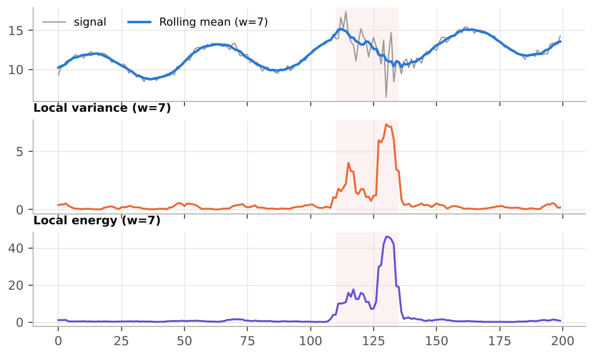
Figure 19 — A noisy zone (pink background): the rolling mean smooths it, local variance and local energy pinpoint it.
Local variance and Local energy turn a visual impression (“it's more agitated here”) into a curve you can threshold: for example a Metric Local_variance > 1 that automatically flags agitated periods.
Derivative and Acceleration
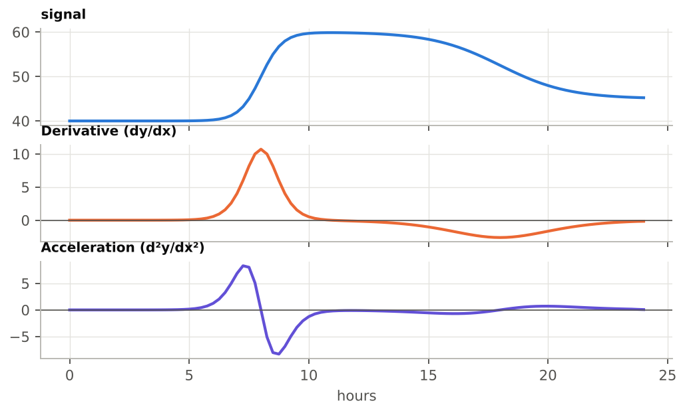
Figure 20 — The derivative shows how fast the series rises; the acceleration shows where the ramp starts (positive) and where it brakes (negative).
The derivative is the point-by-point version of ABS_SLOPE_* (with its sign). Its maximum absolute value matches ABS_SLOPE_MAX. Applying ZERO_X to a Derivative series amounts to counting direction changes.
Rolling correlation
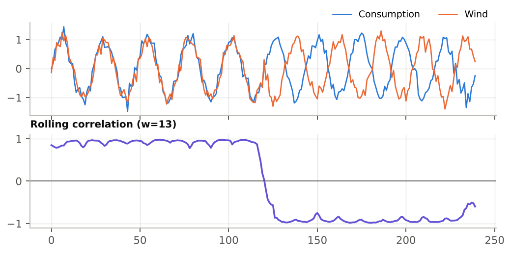
Figure 21 — Two series first in phase, then in opposition: the rolling correlation flips from +1 to −1.
Ideal for spotting when the relationship between two series changes (for example generation and consumption, or a price and a temperature).
Local fractality
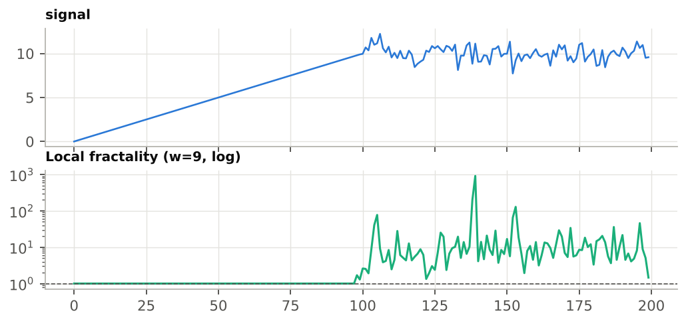
Figure 22 — On the straight section, local fractality is 1; on the noisy section it climbs to 10–100 (log scale).
Within each window, local fractality divides the path length travelled (Σ|dy|) by the gap between the first and last points. It equals 1 for a straight segment and grows with roughness. When the window's start and end have the same value, the ratio is infinite and is replaced by NaN so as not to blow up the Y scale.
8. Reading metrics together
A single metric is easily misleading; three or four metrics read together draw a reliable profile. The following table gives the signatures of the most common signal shapes.
| Profile | AUTOCORR_LAG1 | SPIKE_RATIO | FFT_POWER_HF | Other clues |
| Clean cycle | ≈ +1 | ≈ 1.2 | ≈ 0 | FFT_PERIOD1 = period; 2 × OSC_PERIOD ≈ FFT_PERIOD1 |
| White noise | ≈ 0 | ≈ 1.5 | ≈ 0.5 | SIGN_CHG ≈ 2/3 of trans; FFT_PERIOD1 meaningless |
| Random walk, drift | ≈ +1 | ≈ 1.5 | ≈ 0 | FFT_PERIOD1 ≈ range length |
| Isolated spikes | ≈ 0 to low | ≫ 2 | variable | ABS_SLOPE_MAX ≫ ABS_SLOPE_AVG |
| Single ramp or jump | ≈ +1 | ≫ 2 | ≈ 0 | high RAMP_CONC; low PEAKS (with eps) |
| Fast alternation | < 0 | ≈ 1 | ≈ 1 | SIGN_CHG ≈ trans |
A four-question diagnostic
1. Is the range right? Check nb and that there are no large gaps.
2. How much does it move? NTVAR (or ABS_SLOPE_AVG if the step is irregular), compared across periods or between series of the same unit.
3. How does it move? SPIKE_RATIO and RAMP_CONC (diffuse or concentrated), AUTOCORR_LAG1 (inertial or erratic).
4. Is there a rhythm? FFT_PERIOD1 and OSC_PERIOD (with eps), confirmed by FFT_POWER_LF.
Comparing series with different units Use the dimensionless metrics: SPIKE_RATIO, RAMP_CONC (at equal length), AUTOCORR_LAG1, FFT_POWER_HF/LF, the counts (with an eps suited to each series) and the periods. Avoid TVAR, NTVAR, TVAR2, HF_ENERGY, SMOOTHNESS and the slopes. |
9. Case study: nuclear output with and without solar
Goal: show, with numbers, that nuclear output becomes more “load-following” when solar output is high. The example data are synthetic but reproduce the behaviour seen in the RTE data.
9.1 Preparation
1. Open a query containing the Consumption, Nuclear and Solar series at hourly resolution.
2. Tick Nuclear in A (tick the others too if you want to compare them).
3. Open the Signals palette; show at least NTVAR, PEAKS, SIGN_CHG, AUTOCORR_LAG1, SPIKE_RATIO, FFT_PERIOD1 and FFT_POWER_LF.
9.2 Measuring two periods
1. With the Area palette, frame a winter week (little solar). ReCalc, then Post-it.
2. Move the rectangle to a sunny summer week. ReCalc.
3. Compare the post-it with the current table.
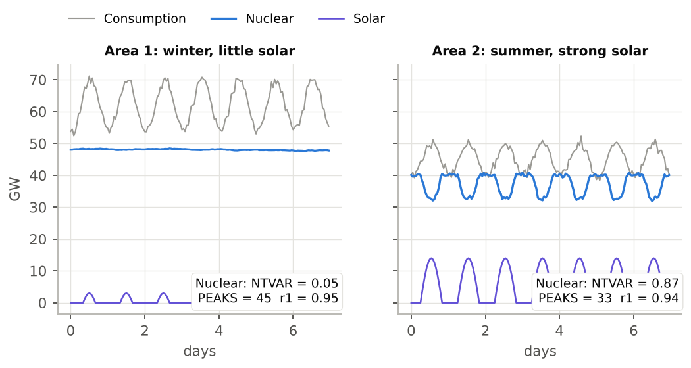
Figure 23 — Winter week (left) and summer week (right): nuclear (blue) modulates as a mirror image of solar (purple).
| Metric (Nuclear) | Winter | Summer | Reading |
| NTVAR (GW per hour) | 0.048 | 0.865 | ≈ 18 times more movement in summer |
| PEAKS (eps = 0) | 45 | 33 | misleading: winter mostly counts noise |
| PEAKS (eps = 0.3) | 0 | 24 | with eps: winter is flat, summer oscillates |
| SPIKE_RATIO | 1.54 | 1.68 | no isolated spikes: regular modulation |
| AUTOCORR_LAG1 | 0.95 | 0.94 | both stay inertial |
| FFT_PERIOD1 (hours) | 168 | 24 | winter: slow drift; summer: 24 h cycle |
| ABS_SLOPE_MAX (GW/h) | 0.17 | 2.98 | much steeper ramps in summer |
9.3 Interpretation
In winter, nuclear output is almost constant: a tiny NTVAR, no oscillation once noise is filtered out, and a dominant “cycle” equal to the whole week (168 h), i.e. a mere drift. In summer, the same series modulates every day: NTVAR grows almost twentyfold, regular peaks and dips appear, and the FFT detects a 24 h cycle (1.0 day on a date axis). Ramps reach nearly 3 GW per hour.
Going further • Convert Nuclear to Local variance (right-click) and overlay it on Solar: the variance rises during the sunniest hours. • Use Rolling correlation between Nuclear and Solar: it becomes clearly negative in summer. • Send both tables to the AI (→ AI) with the question “Interpret Signals”. |
10. Exercises
Exercise 1 — Match curves and metrics
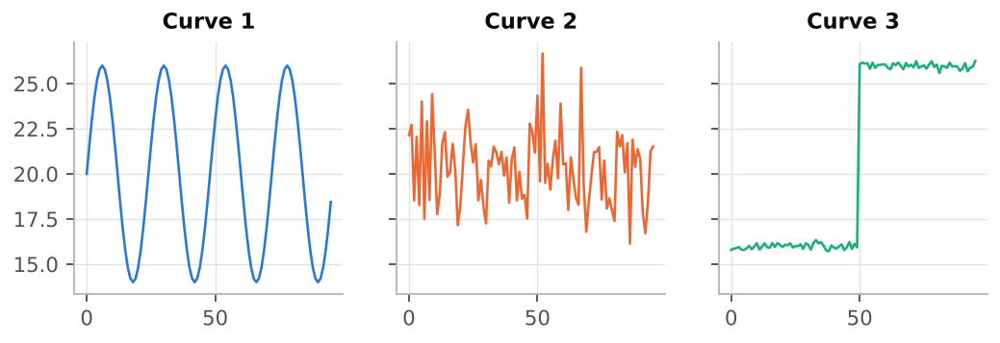
Figure 24 — Three curves of 96 points each.
| Row | AUTOCORR_LAG1 | SPIKE_RATIO | RAMP_CONC | FFT_PERIOD1 | FFT_POWER_HF |
| P | 0.98 | 14.17 | 0.39 | 96.0 | 0.02 |
| Q | 0.97 | 1.23 | 0.11 | 24.0 | 0.00 |
| R | -0.03 | 1.66 | 0.13 | 2.2 | 0.50 |
Match each row P, Q, R to curve 1, 2 or 3, justifying your answer with at least two metrics.
Exercise 2 — Calculation by hand
Take the series y = [2, 5, 3, 3, 8, 6] (X = 0, 1, 2, 3, 4, 5). Compute nb, trans, TVAR, TVAR2, NTVAR, SPIKE_RATIO, RAMP_CONC, SIGN_CHG, PEAKS and VALLEYS (eps = 0). Then check in WysiQ by importing these six values.
Exercise 3 — Interpreting periods
On an hourly temperature series with a date axis, the palette shows FFT_PERIOD1 = 1.0 and OSC_PERIOD = 0.5. What do you conclude? What would these two metrics read if the X axis were a plain hour index?
Exercise 4 — Units
You are comparing a generation in MW and a price in €/MWh. Which of the following metrics can you compare directly between the two series? TVAR, SPIKE_RATIO, SMOOTHNESS, AUTOCORR_LAG1, PEAKS, HF_ENERGY, FFT_POWER_LF.
Exercise 5 — Setting eps
A visually flat nuclear series shows PEAKS = 45 over one week. Explain why, and describe how to get a count that reflects the real oscillations.
Exercise 6 — Signal → Series workshop
On your own data: create the Local variance of a series, then a Metric equal to 1 when this variance exceeds a threshold. Use it to find the three most agitated periods, and compute the Signal metrics on each one.
Answers
Exercise 1
• P = curve 3 (single jump): SPIKE_RATIO = 14.17 and RAMP_CONC = 0.39, both very high; strong inertia (0.98).
• Q = curve 1 (clean cycle): FFT_PERIOD1 = 24.0, FFT_POWER_HF = 0.00, autocorrelation 0.97.
• R = curve 2 (noise): autocorrelation ≈ 0 (-0.03), FFT_POWER_HF ≈ 0.5 (0.50); FFT_PERIOD1 = 2.2 has no physical meaning.
Exercise 2
dy = [3, −2, 0, 5, −2]; nb = 6; trans = 5; TVAR = 12; TVAR2 = 9 + 4 + 0 + 25 + 4 = 42; NTVAR = 2.4; NTVAR2 = 8.4; SPIKE_RATIO = 8.4 / 2.4² = 1.46; RAMP_CONC = √42 / 12 = 0.54. Non-zero signs: + − + − → SIGN_CHG = 3. The 3 → 3 plateau is crossed: peak at 5, dip on the plateau at 3, peak at 8 → PEAKS = 2, VALLEYS = 1.
Exercise 3
With a date axis, the X unit is the day: FFT_PERIOD1 = 1.0 means a daily cycle. OSC_PERIOD = 0.5 day is the average peak → dip distance, i.e. half a period: the cycle is clean (2 × 0.5 = 1.0). With an hour index, you would read FFT_PERIOD1 = 24 and OSC_PERIOD = 12.
Exercise 4
Comparable: SPIKE_RATIO, AUTOCORR_LAG1, FFT_POWER_LF (dimensionless) and PEAKS (a count, provided each series gets a suitable eps). Not comparable: TVAR, HF_ENERGY (Y unit or its square) and SMOOTHNESS (unit-dependent through NTVAR).
Exercise 5
With eps = 0, every tiny noise fluctuation creates a peak: the count measures noise, not load-following. Approach: estimate the point-to-point noise amplitude on a calm section, set eps to 2–3 times that value, confirm, then check that PEAKS matches the visible oscillations. In the chapter 9 case, eps = 0.3 GW brings winter down from 45 to 0 peaks.
Exercise 6
Open exercise. Checkpoints: the Local variance series carries the window in its name (…_rolling_var_w7); it must be recreated after changing the X range; the metrics computed on the agitated periods should show a clearly higher NTVAR and HF_ENERGY than those of calm periods.
11. Cheat sheet of the 22 metrics
| Metric | Level | Formula | Unit / range | Quick reading |
| nb | Basic | len(y) | points | valid points in the range |
| trans | Basic | nb − 1 | steps | denominator of the normalisations |
| TVAR | Basic | Σ|dy| | Y | total vertical path |
| NTVAR | Basic | TVAR / trans | Y per step | average agitation |
| SIGN_CHG | Basic | sign changes of dy | count | direction changes (eps) |
| PEAKS | Basic | + then − | count | local maxima (eps) |
| VALLEYS | Basic | − then + | count | local minima (eps) |
| OSC_PERIOD | Basic | mean spacing of extrema | X | oscillation half-period |
| TVAR2 | Advanced | Σdy² | Y² | energy, weighs big jumps |
| NTVAR2 | Advanced | TVAR2 / trans | Y² per step | average energy per step |
| SPIKE_RATIO | Advanced | NTVAR2 / NTVAR² | ≥ 1 | 1 = uniform; ≫ 1 = spikes |
| RAMP_CONC | Advanced | √TVAR2 / TVAR | 1/√trans … 1 | 1 = a single event |
| ZERO_X | Advanced | sign changes of y | count | zero crossings (eps) |
| ABS_SLOPE_AVG | Advanced | mean|dy/dx| | Y per X | average speed |
| ABS_SLOPE_MAX | Advanced | max|dy/dx| | Y per X | steepest ramp |
| AUTOCORR_LAG1 | Advanced | corr(y[:-1], y[1:]) | −1 … +1 | +1 inertial; 0 noise; − alternation |
| SMOOTHNESS | Advanced | 1 / (1 + NTVAR) | 0 … 1 (Y-dependent) | 1 = smooth |
| HF_ENERGY | Expert | Σ(y − MA_w(y))² | Y² | noise and short oscillations |
| FFT_FREQ1 | Expert | peak of |FFT|² | cycles per X | dominant frequency |
| FFT_PERIOD1 | Expert | 1 / FFT_FREQ1 | X | period of the dominant cycle |
| FFT_POWER_HF | Expert | energy share f > median | 0 … 1 | 0.5 = white noise |
| FFT_POWER_LF | Expert | 1 − FFT_POWER_HF | 0 … 1 | 1 = trend or long cycle |
Appendix — engine pseudo-code
x, y = finite points, filtered on [Xmin, Xmax]
dy = diff(y)
TVAR = sum(|dy|) ; TVAR2 = sum(dy**2)
NTVAR = TVAR / len(dy) ; NTVAR2 = TVAR2 / len(dy)
SPIKE_RATIO = NTVAR2 / NTVAR**2
RAMP_CONC = sqrt(TVAR2) / TVAR
AUTOCORR_LAG1 = corrcoef(y[:-1], y[1:])
HF_ENERGY = sum((y - moving_average(y, w))**2)
SMOOTHNESS = 1 / (1 + NTVAR)
OSC_PERIOD = mean(diff(x of extrema))
# FFT (n >= 8): uniform resampling, then rfft
fs = (n - 1) / (x[-1] - x[0])
power = |rfft(interp(y))|**2
FFT_FREQ1 = freqs[argmax(power[1:]) + 1]
FFT_PERIOD1 = 1 / FFT_FREQ1
FFT_POWER_HF = sum(power[n_f//2:]) / sum(power[1:])
FFT_POWER_LF = 1 - FFT_POWER_HF